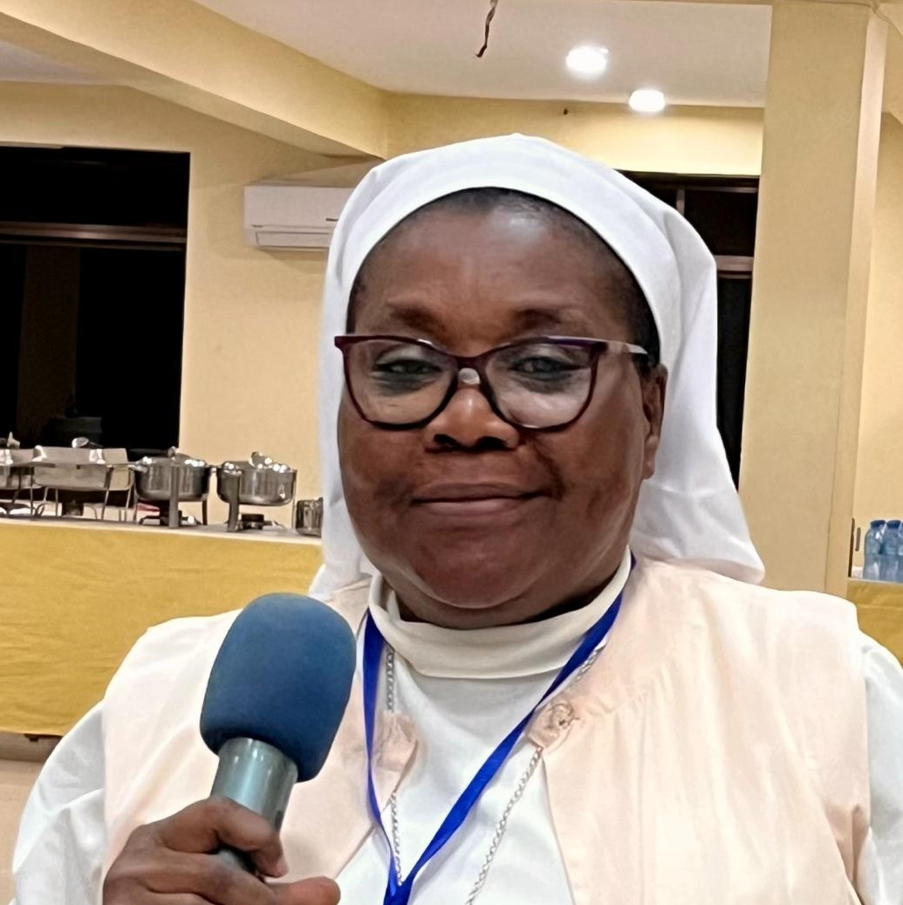

Leadership Team
The Executive Board of the Augustinian Federation of Africa comprises dedicated religious leaders from across the continent. These individuals provide spiritual guidance, strategic direction, and administrative oversight to advance the mission of AFA.

President
Rev. Fr. Kenneth Eze, OSA
PRESIDENT
Nigeria
Province of Nigeria

Vice President
Sr. Faustine Lugadi
VICE PRESIDENT
Congo
Augustines Sisters Servent of Jesus and Mary
Secretary
Rev. Fr. Anaclet Paluku, OSA
GENERAL SECRETARY
Congo
Vicariate of Congo

Assistant Secretary
Sr. Lydia Mukari
ASSISTANT SECRETARY
Kenya
SMK., Kenya

Treasurer
Sr. Jacqueline Michel
TREASURER
Togo
N.D.E, Togo
Assistant Treasurer
Rev. Fr. Mekpato Francois de Sales, OSA
ASSISTANT TREASURER
Belgium
Province of Belgium

Coordinator
Rev. Fr. Tasilo Nchimbi, OSA
SECRETARIATE COORDINATOR
Tanzania
Vicariate of Tanzania